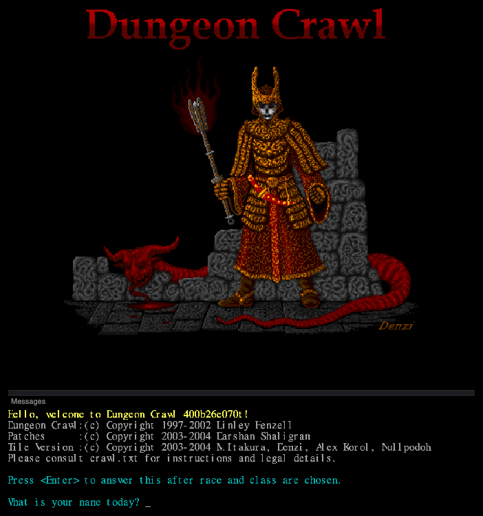
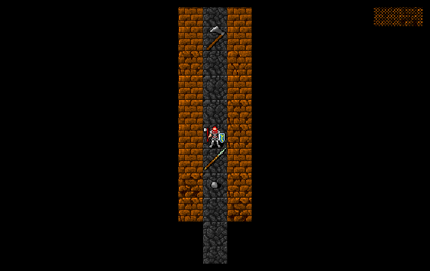
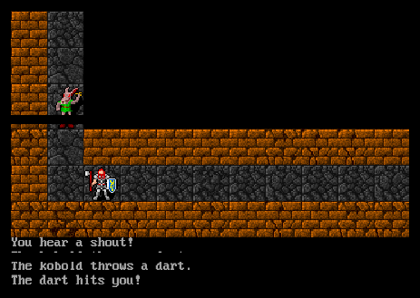
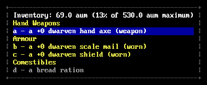

fetch the Orb of Zot · the game Stone Soup grew from
> Enter the dungeonLinley Henzell, then at the University of Adelaide, started Crawl in 1995 as new code, not a fork; its quick-start guide calls it “one of the descendants of Rogue”. The goal, the Orb of Zot, comes from Wizard's Castle, a BASIC game. From version 3.40 (2000) the Crawl DevTeam carried on; 4.0 beta 26 (2003) was their last release. In 2006 Darshan Shaligram and Erik Piper restarted development as Dungeon Crawl Stone Soup, still developed today. See the family tree.
Played here: 4.00b26 with Mitsuhiro Itakura's tile version e070 (2005), RLTiles graphics, compiled to WebAssembly.
| Linley Henzell | Creator (1995–1999) |
| Crawl DevTeam | 3.40–4.0b26 (2000–2003) |
| Mitsuhiro Itakura | Tile version (2003–2005) |
| Denzi, Alex Korol, Nullpodoh | Tiles and title art |
| Darshan Shaligram | Patches; later co-founded Stone Soup |




newgame.cc)mon-data.h)mon-data.h, mon-spll.h); a WIZARD build flag adds debug commands.winclass.cc, libtile.cc) and paper-doll player graphics.| Thing | Count | Notable ones |
|---|---|---|
| Species | 34 | 26 in the menu; the Draconian becomes one of nine colours. |
| Classes | 29 | Fighter, Wizard, Priest, Thief, Gladiator, Necromancer, Paladin, Assassin, Berserker, Hunter, Conjurer, Enchanter, four Elementalists, Summoner, Crusader, Death Knight, Venom Mage, Chaos Knight, Transmuter, Healer, Reaver, Stalker, Monk, Warper, Wanderer… |
| Gods | 12 | Zin, the Shining One, Kikubaaqudgha, Yredelemnul, Xom, Vehumet, Okawaru, Makhleb, Sif Muna, Trog, Nemelex Xobeh, Elyvilon. |
| Monsters | ~330 | Uniques like Sigmund, Blork the Orc, Psyche, Norbert; Pandemonium lords Mnoleg, Lom Lobon, Cerebov, Gloorx Vloq; hell lords Geryon, Dispater, Asmodeus, Antaeus, Ereshkigal; the Serpent of Hell. |
| Spells | ~190 | |
| Runes needed | 3 | To enter the Realm of Zot, since 3.40. |
The full manual, crawl.txt, and Linley’s quick-start guide.
No walkthrough for this version. The quick-start guide covers the first games. Tips:
Crawl has a wizard mode (&), but only in builds compiled with WIZARD; this browser build is not. Export save / Import save keeps backups.